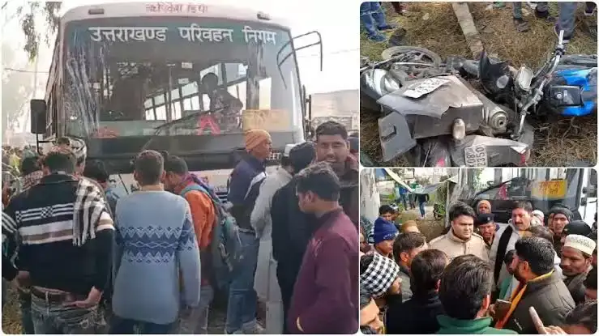
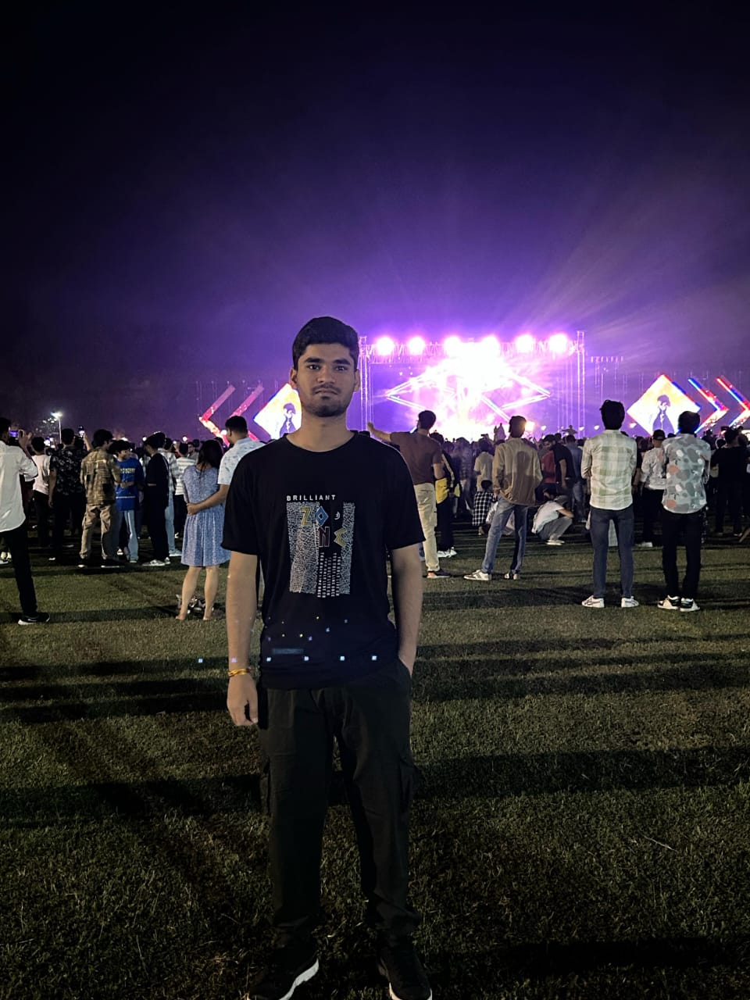

Miracle in Roorkee: IIT Roorkee Student Rescued Alive from Bus Accident
Roorkee, Uttarakhand, April 12, 2025
In a dramatic turn of events, a 20-year-old IIT Roorkee student, Abhishek Mahobia, was miraculously rescued alive from the wreckage of a devastating bus accident in Roorkee today, hours after authorities initially believed he had perished. The incident, which occurred near the Roorkee-Manglaur bypass on the Haridwar-Delhi national highway, has left the local community and the institute in awe of his survival.
At approximately 8:30 AM, a state roadways bus traveling from Haridwar to Delhi collided with a truck carrying construction materials, causing the bus to overturn and skid off the road. Eyewitnesses described a chaotic scene, with debris scattered across the highway and emergency responders rushing to assist the injured. Early reports indicated 12 fatalities, including several passengers trapped in the wreckage. Among them, Abhishek, a third-year B.Tech student in Computer Science at IIT Roorkee, was presumed dead after rescuers found him unresponsive beneath a pile of twisted metal.
However, at around 2:15 PM, a volunteer firefighter detected faint movement in the debris. After nearly an hour of painstaking effort, rescue teams pulled Abhishek from the wreckage, battered but alive.
Doctors at Roorkee Civil Hospital, where he was immediately transported, confirmed he had sustained multiple fractures and a concussion but was in stable condition. “It’s nothing short of a miracle,” said Dr. Neha Gupta, who treated Abhishek. “He was buried under heavy debris for hours, yet his vital signs remained strong enough for us to stabilize him.”
Abhishek’s family, who had been informed of his supposed death, was overcome with emotion upon hearing the news of his rescue. “We thought we had lost him forever,” said his mother, Sunita Mahobia, tears streaming down her face. “I can’t thank the rescuers and God enough for bringing my son back.”
The accident has sparked renewed concerns about road safety on the busy Roorkee stretch, with locals pointing to frequent speeding and inadequate traffic enforcement as contributing factors. Haridwar SSP Vikram Singh announced an investigation into the cause of the crash, stating, “We are examining the bus’s condition, the driver’s actions, and the truck’s role in this tragedy. Our priority is to prevent such incidents in the future.”
At IIT Roorkee, students and faculty gathered for a candlelight vigil to honor the victims and pray for Abhishek’s recovery. “Abhishek is a brilliant student and a kind soul,” said Professor Vellu Swami, head of the Computer Science department. “His survival gives us hope amidst this sorrow.”
As the town grapples with the aftermath, Abhishek’s rescue stands as a testament to the resilience of the human spirit and the tireless efforts of emergency responders. The community now rallies around him, hoping for his swift recovery and a renewed focus on safer roads.